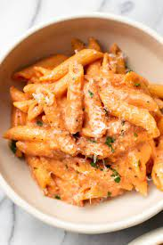

Simple Pasta with Tomato Sauce

Description
A quick and simple one-pot pasta dish, perfect for young chefs and picky eaters. Serves 4.
Ingredients
- 2 TB extra-virgin olive oil, plus extra for drizzling.
- 1 onion, peeled and chopped fine
- 1 tsp salt
- 4 garlic cloves, peeled and minced
- 1 (28-ounce) can crushed tomatoes
- 1/4 tsp sugar
- 3 3/4 cups penne pasta
- 3 cups water
- 1/4 cup chopped fresh basil
- Parmesan cheese, grated
Steps
- In large pan, heat oil over medium heat for 1 minute. (Oil should be hot but not smoking.)
- Add onion and salt and cook, stirring often, until onion is softened, about 5 minutes.
- Stir in garlic and cook for 30 seconds.
- Stir in tomatoes and sugar. Reduce heat to medium-low and simmer gently, stirring occasionally, for 10 minutes.
- Carefully stir in pasta and water. Increase heat to medium-high and cook, stirring often, until pasta is tender, 16-18 minutes.
- Remove from heat. Drizzle pasta with the extra oil and sprinkle basil over top. Divide pasta into bowls and serve with Parmesan cheese.
Return to main page